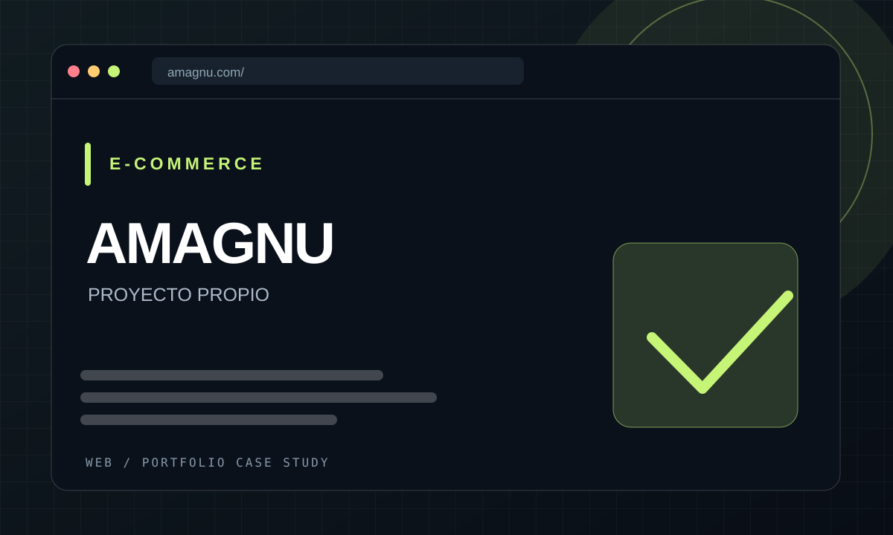
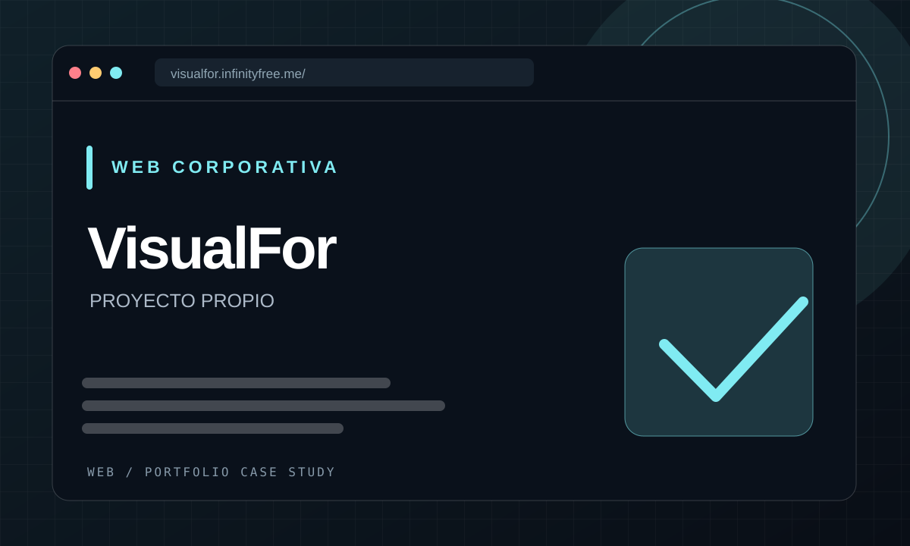

WEB / E-COMMERCEDEVELOPER / CREATIVE / DIGITAL MAKER
Código y arte.En movimiento.
Desarrollo webs, aplicaciones y videojuegos, y creo piezas visuales para YouTube. Me gusta unir programación, diseño y edición para convertir ideas en proyectos que se puedan explorar.
ENRIC / STUDIODEV × ART

DETRÁS DEL CÓDIGOENRIC.Desarrollo · Diseño · Game Dev
HTML / CSS / JSC# / UNITYVIDEO / ARTE
SCROLL TO EXPLORE PORTFOLIO 2026 / MULTIDISCIPLINAR
01 / TRABAJOS DESTACADOS
Trabajos que puedes explorar.
Una selección de lo más representativo: dos webs que puedes visitar, edición propia y colaboración en videojuegos.

WEB / IA03 / EDICIÓN & ANIMACIÓN
Montaje Pokémon
Edición, animaciones y composición GAME DEVELOPMENT
GAME DEVELOPMENT
Las imágenes editoriales de AMAGNU y VisualFor son composiciones de presentación, no capturas de sus interfaces.
02 / DESARROLLO ASISTIDO POR IA
IA aplicada a proyectos reales.
Utilizo herramientas de IA para acelerar prototipos y desarrollo web, revisando y adaptando el resultado desde el criterio técnico y visual.
CASO REAL ✦ VIBE CODING
VisualFor
Proyecto web propio desarrollado mediante vibe coding: un flujo de trabajo apoyado por IA para construir y ajustar una web corporativa con HTML, CSS, JavaScript y PHP.
IA como herramientaHTML / CSSJavaScriptPHP
Explorar VisualFor Mi forma de usar IA
01
Desarrollo web
Prototipado, implementación y revisión de interfaces y funcionalidades.
02
Aplicaciones y prototipos
Exploro ideas de software combinando herramientas de IA y conocimientos de programación.
03
Ver también mis proyectos web ↗Iteración y diseño
Pruebas, corrección de problemas y mejora de la experiencia de usuario.
EN DESARROLLO · FUTURO PROYECTO
Aprender a tu ritmo.
Estoy preparando una plataforma de formación online con clases pregrabadas, para aprender cuando quieras y avanzar a tu propio ritmo. El catálogo y la fecha de lanzamiento todavía están por definir.
Conocer el proyecto
Próximamente
PROJECT IN PROGRESS01 / NEXT
03 / MIS DISCIPLINAS
Tecnología con visión creativa.
Me muevo entre disciplinas y conecto lo técnico con lo visual. Estas son mis principales áreas de trabajo.
04 / DESARROLLO WEB
De la idea a la web real.
Proyectos propios publicados y colaboraciones realizadas durante mi etapa en Paddock Comunicación. Los sitios de clientes son trabajos de equipo, no desarrollos íntegramente míos.
A / 02
DESARROLLO & DISEÑO WEBProyectos propios
B / 04
PADDOCK COMUNICACIÓN · 2022—2024Experiencia con clientes
Colaboré en desarrollo de secciones, modificaciones y mantenimiento de webs existentes; también en tareas técnicas con CSS, PHP, cPanel y bases de datos. Las webs pueden haber cambiado desde mi participación.
05 / PROYECTOS & EXPERIENCIA
Proyectos y experiencia.
Proyectos reales, vídeos y experiencias de desarrollo: IA aplicada a webs, apps, Unity y edición. Las fichas históricas sin material conservado se indican expresamente.
06 / GESTIÓN DE CANALES
Tres canales. Una visión creativa.
Planifico, edito y publico contenido, diseño miniaturas y analizo resultados. Estos son los tres canales de YouTube que gestiono.
Producción audiovisual, diseño y gestión editorial. Las miniaturas son muestras de los canales; la imagen de DualByteStudio es una composición gráfica del portfolio.
07 / VISUAL PLAYGROUND
Arte, movimiento y píxeles.
Una selección audiovisual que reúne el montaje de Baruc, las colaboraciones en game dev, animación 2D y vídeos de mis canales.
i Pulsa una miniatura para reproducir el vídeo. Los MP4 están optimizados para la web; los vídeos de YouTube se cargan al abrirlos. Modifica el contenido desde editar.html.
08 / YOUTUBE THUMBNAIL LAB
Diseño que llama la atención.
Ocho miniaturas seleccionadas de mis vídeos de YouTube. Una galería centrada en el diseño, la composición y la legibilidad visual.
Ocho miniaturas seleccionadas. The Last Guardian abre la colección; cada pieza enlaza a su vídeo original.
i Haz clic para ampliar y abrir el vídeo original. Las miniaturas se cargan desde YouTube y enlazan con su vídeo. Puedes editar y reordenar esta selección desde editar.html → Miniaturas.
09 / DETRÁS DE LA PANTALLA
Un perfil, muchas formas de crear.
01 / MI FORMA DE TRABAJAR
✳
La lógica resuelve problemas.
La creatividad abre posibilidades.
TRAYECTORIA ↗
FORMACIÓN ↗
10 / FORMACIÓN ACREDITADA
Formación que puedo acreditar.
Estudios y formación complementaria, diferenciando títulos oficiales, expediente académico y certificados de cursos.
He cursado formación técnica y académica que puedo documentar. Para proteger mis datos personales, las copias de los títulos y certificados no se publican en abierto.
01 / 04Expediente académico
CFGS Desarrollo de Aplicaciones Web (DAW)
ILERNA · Formación Profesional de Grado Superior
Expediente de evaluación del ciclo formativo. El documento aportado no es el título oficial expedido.
02 / 04Título oficial
Técnico en Gestión Administrativa
Generalitat de Catalunya · Ministerio de Educación · 2017
Título de Formación Profesional de Grado Medio en Gestión Administrativa.
03 / 04Diploma de aprovechamiento
Formación en .NET
Cambra de Comerç de Lleida · 2019
Programa Integral de Cualificación y Empleo · 95 horas de formación.
04 / 04Título oficial
Graduado en Educación Secundaria Obligatoria
Generalitat de Catalunya · Ministerio de Educación · 2014
Título de Educación Secundaria Obligatoria (ESO).
La solicitud abre tu aplicación de correo y no concede acceso automático. Los documentos se comparten únicamente con destinatarios autorizados, por ejemplo mediante una carpeta privada restringida por dirección de correo.
11 / LET'S MAKE SOMETHING
¿Tienes una idea?
Hagámosla realidad.
Desarrollo web, videojuegos, edición, diseño, animación y creatividad digital. Si mi perfil encaja con tu proyecto, hablemos.